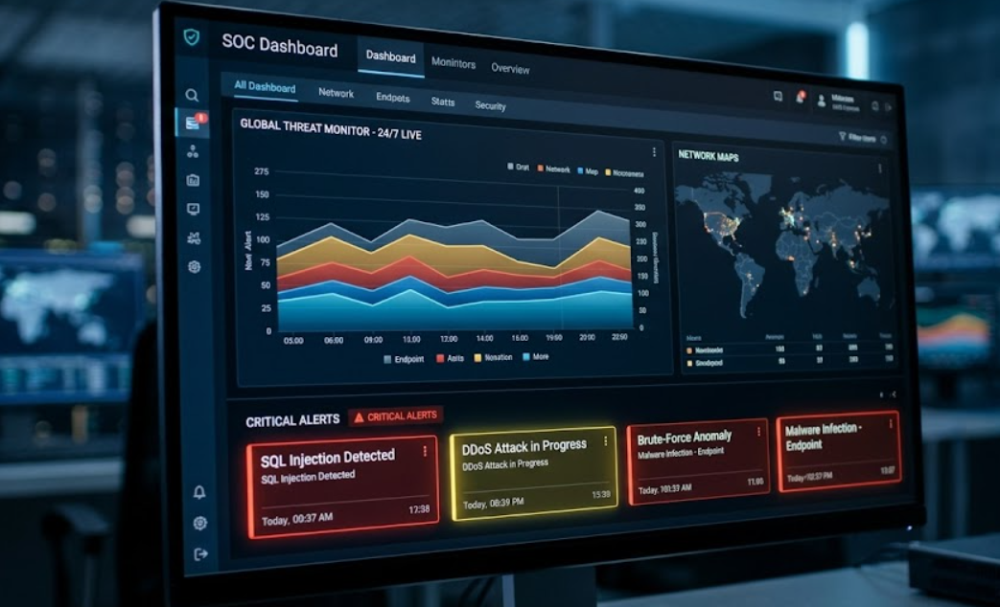
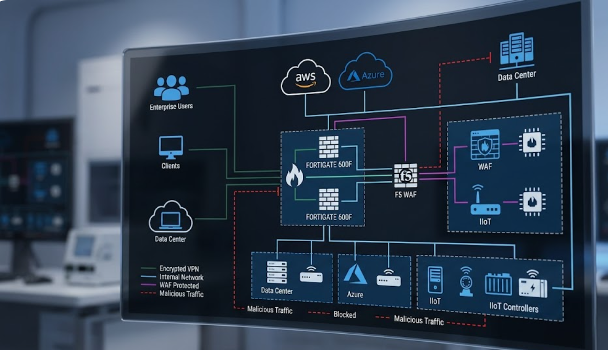
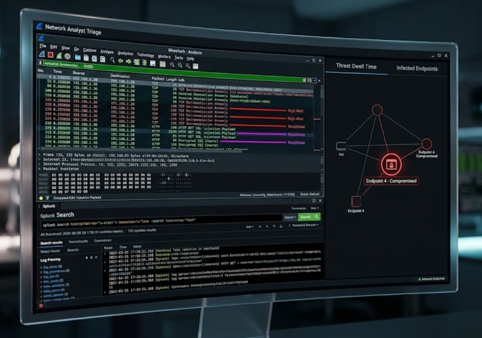
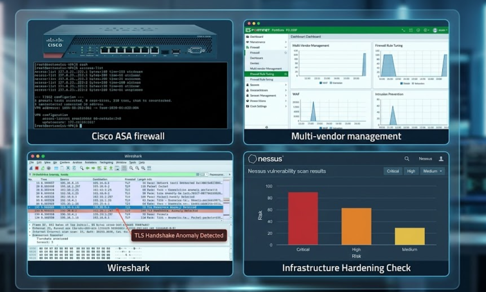
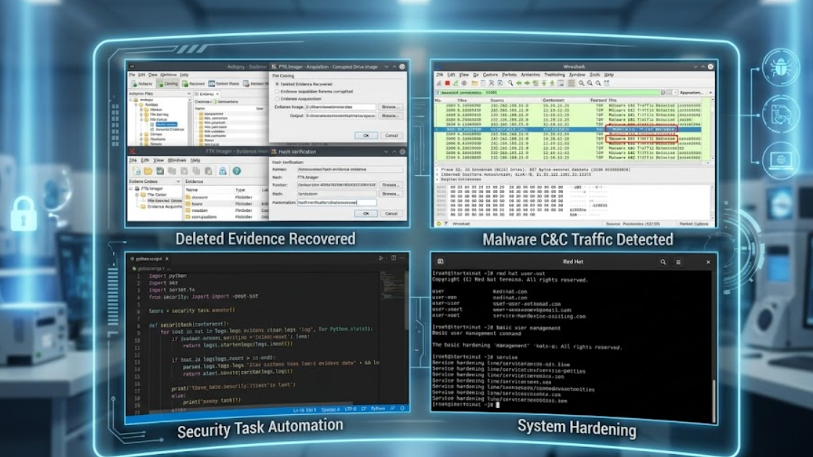

Muhammad ABOZIED
Founder of CyberRoute | Security Operations Architect
SOC Analyst & Incident Responder
Founder of CyberRoute | Security Operations Architect
SOC Analyst & Incident Responder
A showcase of secure infrastructure deployments, SIEM monitoring, and tactical defense strategies.

24/7 Monitoring setup using Splunk/ELK, highlighting real-time threat detection, SQL injections, and DDoS alerts.

Multi-tier defense implementation including WAF, Encrypted Site-to-Site VPNs, and FortiGate perimeter defense.

Digital forensics workflow showcasing packet analysis (Wireshark) and malware triage environments.

Building a specialized academy and brand focused on the Blue Team Career Path.

Splunk, ELK, Wireshark, FortiGate, Cisco ASA, Nessus, FTK Imager, Autopsy.

Incident Response, SIEM Tuning, Log Forensics, Network Hardening, Threat Intel, Malware Triage.
I am ready to bring my SOC expertise and leadership to your proactive team.